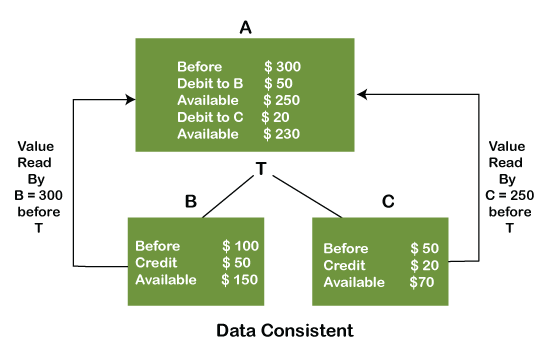

In this article , we are going to discuss about ACID properties of a DBMS system . But before exploring
,ACID properties , first let us have a basic insight about DBMS .
DBMS is an acronym for Database Management System , which is a software which helps in management of a database.
A database refers to an organized collection of any structured data stored electronically in
an electronic system , while Managament refers to handling resources of any organisation or system.
TRANSACTION
A transaction refers to a single logical unit of work or query that makes any changes in
the database or the database content . Since there are changes being done in the database ,
to maintain the consisteny and dataflow , there are some properties which are needed to be
taken care of. Such properties are called ACID properties.
ATOMICITY
The concept of atomicity refers to how atomic the data remains.
It means that if any operation is performed on the data, it
should be done totally, partially, or not at all. It also implies
that the process shouldn't stop midway through or only partially
complete. When performing actions on a transaction,
the operation should be carried out whole, not only partially.
For example , assume that person A sends $10 from his account which has $30 in his account ,
to a person B with already having $100 in his account . Now inside all this transaction , two
processes are taking place. Firstly , 10$ will be deducted from account of person A , and same
will be credited in account B . But in case account B is unable to gain $10 but it is deducted
from account A , the transaction would be considered as partial .
But if both of the operations happen neatly the transaction will be said to be atomic.
CONSISTENCY
Consistency means that the value should always be maintained.
In DBMS, the integrity of the data must be upheld,
which calls for any changes to the database to always
be retained. Data integrity is crucial in transactions
because it ensures that the database is consistent
both before and after the transaction.
The information should always be accurate.
For example , assume there are three accounts A , B and C . A
is making a transaction to both B and C . Now A gives account B
50$ so its balance becomes 250$ after deduction of 50$ and B's
balance increases by 50$. Now , A sends 20$ to account C , and its balance is
now shown as 230$ (after deduction of 20$) and C's balance increases by 20$.
So overall , we can say that this whole series of transactions was consistent
because there was no malfunctioning sduring the whole transaction. So the data is consistent.

ISOLATION
Isolation is another word for separation.
Isolation in DBMS refers to a database's
ability to operate concurrently while ensuring
that no data should impact the other. In other
words, when an operation on one database is
finished, an operation on another database
should start. It implies that two operations
on two different databases may not have an impact
on one another's value. The consistency should be
upheld when two or more transactions take place at
once in the case of transactions. Other transactions
won't notice any modifications made during a specific transaction until
the change has been committed to memory.
For example , The value of both accounts shouldn't
change if two activities are being executed simultaneously
on two different accounts. The value should be maintained.
As seen in the diagram below,
account A is making T1 and T2 transactions
to accounts B and C, but each are carrying them
out separately and without interfering with one another.
It is referred to as isolation.
DURABILITY
Something is permanent if it is durable.
Durability in DBMS refers to the guarantee that data remains
in the database permanently once an operation has been successfully
completed. Data should be so perfectly durable that it can still
function even in the event of a system failure or crash. However,
if it disappears, the recovery manager is now in charge of making
sure the database is durable. Every time we make changes,
we must use the COMMIT command to commit the settings.